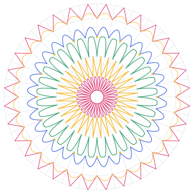

Katalo
Manual de marca y sistema de diseño
Versión 1.0 · octubre 2026. Para diseño, desarrollo y cualquier persona que escriba en nombre de Katalo.
Esencia
La vidriera de tu negocio en un link.
Qué hacemos
Le damos a cada comercio paraguayo un catálogo online que se comparte con un link. Sus clientes ven todo y consultan por WhatsApp con el producto ya elegido.
Para quién
Para el comercio que hoy vende mandando fotos y precios uno por uno, desde el celular, y que quiere ordenarse sin cambiar cómo vende.
Qué no somos
No somos una tienda con carrito, pagos ni gestión de pedidos o stock. Nunca lo prometemos en ningún texto. La venta la cierra el comercio, por WhatsApp.
Un link, tres pasos. Si algo necesita explicación larga, sobra.
Hablamos como un vecino que sabe de esto: voseo y frases cortas.
Guaraníes, WhatsApp, ñandutí. Paraguay sin caer en lo folclórico.
Sin cifras infladas ni testimonios inventados. Solo lo que es real.
Nombre y logo
Katalo viene de “catálogo”, escrito con la k del guaraní. El sello es una rosa de ñandutí de 12 pétalos con el centro amarillo: un tejido que parte de un punto y se abre, como un catálogo que se comparte.
No hacer
Color
Una base fría y limpia con el azul cobalto como único color de acción. Los hilos del ñandutí le dan vida en detalles: líneas, íconos, fondos suaves detrás de imágenes. Nunca en botones.
Proporción aproximada en una pantalla: blanco y gris dominan, tinta y primario estructuran, los hilos acentúan.
{{ g.title }}
Reglas
- El texto blanco va solo sobre primario o tinta. Sobre amarillo, siempre tinta.
- Todos los botones son primarios (azul) o secundarios (borde tinta). Los hilos nunca se usan como color de botón.
- El verde WhatsApp va solo en botones que abren WhatsApp. No es un color de marca.
- Los hilos se usan en líneas de 4 px, íconos y marcas de “incluido”. Para texto, solo el fucsia y el verde, y solo en tamaño título (contraste mínimo 3:1).
- Los tintes suaves se usan como escenario detrás de capturas o fotos, un tinte por bloque y sin repetir el mismo tinte en bloques seguidos.
Tipografía
Títulos y subtítulos. Pesos 600 y 700. Tiene carácter, con una leve irregularidad que la hace cercana. Interlineado ajustado y tracking negativo.
Cuerpo, botones, interfaz. Pesos 400, 500 y 600. Neutra y muy legible en pantallas chicas.
Siempre en oración normal, nunca en mayúsculas sostenidas. El cuerpo se corta en unos 65 caracteres por línea como máximo.
El motivo ñandutí
Es el encaje paraguayo de tejido radial, dibujado en líneas finas. Es el elemento memorable de la marca y por eso se usa con moderación.
- Versión completa: una sola vez por pieza, detrás del producto protagonista (celular del hero, portada).
- Versión de cierre: a 40% de intensidad, con un halo blanco detrás del texto.
- Siempre decorativo: no lleva texto encima sin halo, y en código va con aria-hidden.
- En celular se achica y se recorta; nunca empuja el contenido.
- Los hilos (líneas de 4 px en fucsia, amarillo, verde o azul) son su eco en el resto de la interfaz: sobre títulos de bloque, pasos y casos.
Hilo de título: 48 × 4 px, radio 2, 24 px arriba del título.
Hilo de bloque: borde superior de 4 px en pasos y casos, un color por elemento.
Franja de cierre: los cuatro hilos, encima del footer. Una por página.
Componentes
La jerarquía se arma con contraste, no con tarjetas. Hay una sola sombra en todo el sistema: la del marco de celular.
Botones
48 px de alto, radio 12, sin sombra. Sin flechas ni íconos decorativos. En celular, los botones principales ocupan todo el ancho.
Selector y burbuja
El selector se usa con las flechas del teclado. La burbuja es la única animación automática del sitio: fundido de 400 ms al cargar.
Radios y sombra
Espaciado en múltiplos de 8. Secciones con 120 px de margen vertical (72 px en celular). El contenido llega hasta 1200 px de ancho.
Íconos: de línea, con trazo 1.5, estilo Lucide, en tinta. Sin emojis y sin íconos de colores en los títulos.
Fotografía
El producto real va antes que cualquier ilustración. Usamos fotos de comercios que usan Katalo y capturas reales del catálogo. Nada de íconos genéricos, 3D ni stock.
Fotos cuadradas, con luz natural, el producto centrado y en su ambiente. Siempre con texto alternativo.
Voz y tono
Usamos voseo paraguayo, frases cortas y verbos concretos. Hablamos de lo que el comercio ya hace (mandar fotos, responder consultas) y mostramos cómo hacerlo más fácil.
{{ v.rule }}
Vocabulario
Precios siempre en guaraníes con punto de miles: Gs. 89.000. No usamos cifras que no tengamos (“+3.500 tiendas”, “la #1”). Los testimonios los escriben los dueños, con su permiso.